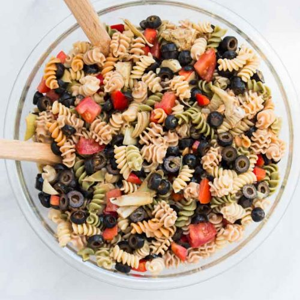

Pasta Salad With Olives

Description
Pasta salad with olives is a staple dish at our family get togethers. The recipe
listed below is my favorite take on this classic dish.
Below you will find a complete ingredients list and a simple to follow recipe to make the
to make the perfect pasta salad.
Ingredients
- Veggies: cherry tomatoes, cucumber, red bell peppers, green onions or red onions
- Meat: ham cubes, grilled chicken, crab, bacon, salami or pepperoncini
- Fresh herbs: basil, oregano, or parsley
- Cheese: fresh mozzarella cheese or feta cheese
Recipe Instructions
- PASTA. Boil the pasta noodles according to package directions. When they’re cooked, drain and rinse pasta with cold
water. (For added flavor, add 1-1½ tablespoons of salt for every pound of pasta you are boiling.)
- MIX INS. Add in your desired amount of other ingredients (we always use olives, cheese, and pepperonis – sometimes
tomatoes and cucumbers). Pour at least half of the Italian dressing on the salad, and mix well.
- CHILL + SERVE. Refrigerate for at least 2 hours, pour the remaining dressing on right before serving!